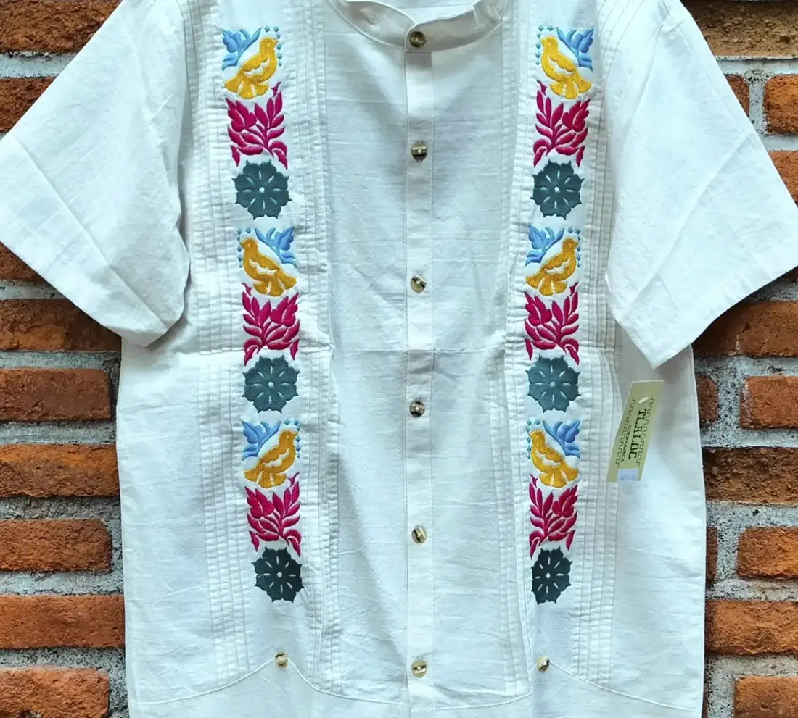
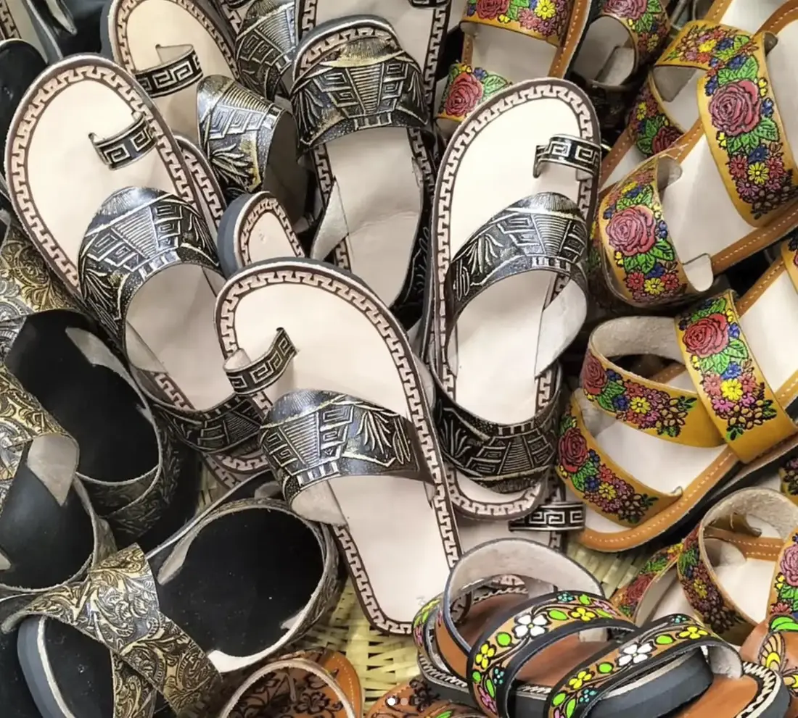
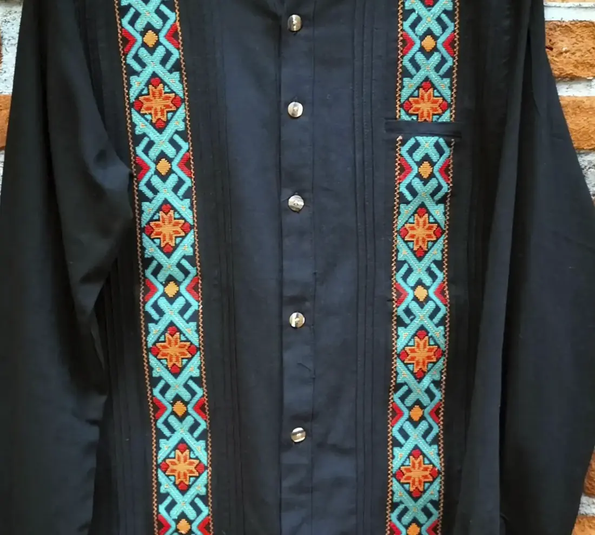
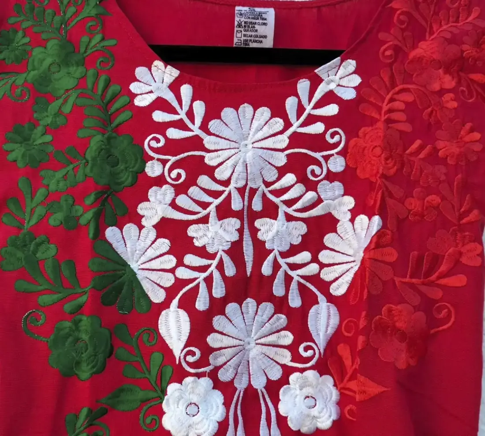
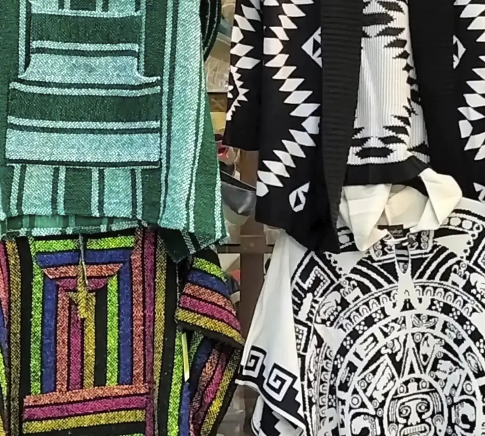

Tradición y Elegancia en cada Paso
Calzado de piel, huaraches artesanales y ropa de manta con el alma de México.
Explorar ColecciónNuestra Esencia
Huarachería
Piel tejida a mano con técnicas ancestrales.
Ropa de Manta
Frescura y estilo natural para tu día a día.
Calzado de Piel
Durabilidad y diseño ergonómico de primera clase.
Pasarela Tlaloc





Lo que dicen nuestros clientes
"Gran surtido de ropa para dama y caballero, variedad de calzado, para todos los gustos y edades, una forma de vestir muy original, si no encuentras algo puedes preguntar y sobre todo una excelente atención."
Vía Google Reviews"Ropa y accesorios de buenos materiales, encuentras manta, lino en diseños de muy buen gusto. Además de que tienen sistema de apartado y una guayaberas muy elegantes y frescas"
Vía Google Reviews"Tienen una amplia variedad de huaraches hechos a mano por manos mexicanas, y sandalias, además de diseños de marcas como flexi, gillio entre otras. Ropa y accesorios de piel. Buenos precios. Me gustó mucho."
Vía Google ReviewsVisítanos
Tlaloc Zapatería
Dirección: Blvd. Lic. Benito Juárez, Cuernavaca Centro, Centro, 62000 Cuernavaca, Mor.
Horario:
Lunes a Domingo: 10:30 AM - 8:00 PM